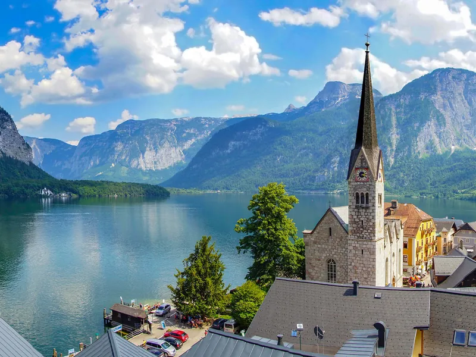
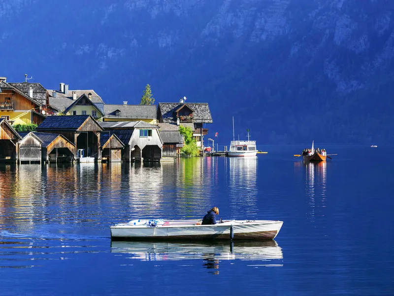
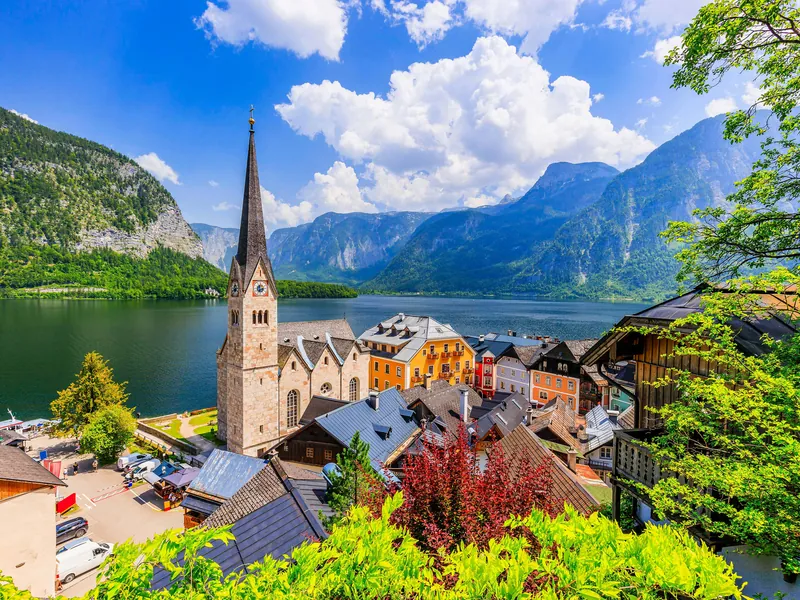
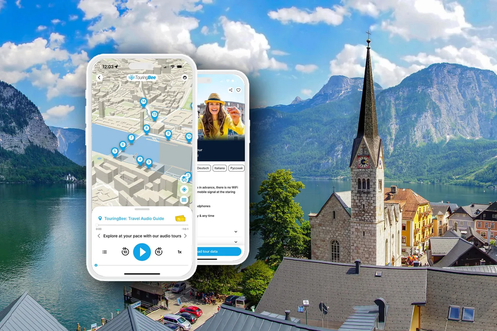

Путеводитель по Гальштату → Все путеводители
Хальштатт из Зальцбурга: как добраться
Семьдесят пять километров. И четыре совершенно разных дня — смотря как вы их проедете.
Дорога из Зальцбурга в Хальштатт кажется простой однодневной поездкой. Всего 75 километров — но способы добраться сюда совсем не равноценны. Поезд идёт около двух с половиной часов и высаживает вас на причале, откуда деревня видна целиком — через воду. Машина довезёт примерно за час с четвертью, но оставит за пределами исторического центра: от парковки придётся идти 15–40 минут, смотря где ещё есть места.
Ниже — четыре варианта: поезд, автобус через Бад-Ишль, машина и готовая экскурсия. С цифрами, какие они есть осенью 2026 года. Плюс паром, о котором большинство узнаёт, уже выйдя из вагона, и одна декабрьская дата, которая поменяет все времена поездов на этой странице.
Одно дело проще решить дома, чем на причале: деревню можно пройти за пятнадцать минут, но без контекста легко пройти мимо большей части её истории. Наш аудиогид по Хальштатту ведёт от паромного причала до смотровой площадки ЮНЕСКО — семнадцать остановок, офлайн, в том темпе, какой позволяет ваш обратный поезд. Скачайте по зальцбургскому вайфаю: на месте связь не понадобится.
Планируете поездку целиком? Начните с полного путеводителя по Хальштатту, а сюда вернитесь за дорогой.

Коротко
| Вариант | Зальцбург — Хальштатт, в одну сторону | Сколько стоит | Кому |
|---|---|---|---|
| Поезд через Аттнанг-Пухгайм | 2 ч 20 мин — 2 ч 50 мин — одна пересадка плюс короткая переправа в конце | Sparschiene от 9,90 €; паром 4,00 € | Всем, кто без машины |
| Автобус 150 + поезд через Бад-Ишль | 2 ч 30 мин — 3 ч — 1 ч 20 мин — 1 ч 30 мин до Бад-Ишля, дальше поезд | Два отдельных билета, единого нет | Очень ранний выезд; остановка в Бад-Ишле |
| Машина | 1 ч 15 мин — 1 ч 30 мин на 75–88 км, плюс 15–40 минут пешком от парковки | Бензин + австрийская виньетка + парковка 10–20 € | Компании из трёх-четырёх человек с машиной |
| Экскурсия | 5,5–10 часов туда-обратно, из них 2–3 часа в деревне | ≈95–180 € с человека | Тем, кто не хочет никакой логистики |
Длины отрезков ориентировочные; точные диапазоны — в таблице выше.
Выбрать за двадцать секунд
Без машины? Поезд. Самый понятный вариант — и последние минуты по озеру становятся частью поездки, а не концом дороги.
Семьёй или компанией? Сравните машину. На троих-четверых она часто оказывается конкурентной по цене и заметно быстрее — около часа выигрыша в каждую сторону.
Не хотите ничего решать? Экскурсия. Стоит в несколько раз дороже билета на поезд и привозит в деревню в середине дня, зато снимает с вас расписания, пересадки и парковку.
Поездом
Прямого поезда нет. Схема такая: Зальцбург-Хауптбанхоф → Аттнанг-Пухгайм (Attnang-Puchheim), там пересадка на Зальцкаммергутбан — региональную линию, которая идёт вдоль озёр через Бад-Ишль (Bad Ischl) до Хальштатта и дальше на Штайнах-Ирднинг.
Отрезки очень неравные, и именно это упускают почти все сравнительные таблицы. Зальцбург — Аттнанг-Пухгайм проходится быстро: 40–55 минут. Зальцкаммергутский отрезок — длинный: примерно полтора часа, из них минут сорок до Бад-Ишля и ещё около пятидесяти до Хальштатта. С пересадкой вся дорога занимает 2 ч 20 мин — 2 ч 50 мин.
На некоторых стыковках пересадка в Аттнанг-Пухгайме короткая — пара минут. Для этого маршрута это нормально: поезда согласованы. Но за кофе в эти две минуты не ходите.
Билеты
Тариф Sparschiene у ÖBB начинается от 9,90 € во втором классе. Покупается заранее, до 180 дней, только онлайн или в приложении. Привязан к конкретному поезду и не возвращается.
Если едете вдвоём или больше, посмотрите на Einfach-Raus-Ticket: 38 € на двоих, плюс 4 € за каждого следующего, до пяти человек. И тут важнее цены другое условие. Билет действует только на региональных поездах — S-Bahn, R и REX — и не действует на Railjet, RJX и InterCity. Участок Зальцбург — Аттнанг-Пухгайм обслуживают и те и другие, поэтому при поиске маршрута выбирайте соединение, целиком составленное из региональных поездов, а не первое, что предложит ÖBB.
Хорошая новость: во времени вы почти ничего не теряете. Региональные проходят этот участок за те же 40–55 минут, что и скорые. Просто ходят реже — примерно раз в час-два, а не строго ежечасно. Второе условие — часы: в будни Einfach-Raus-Ticket действует только с 09:00, так что ранний выезд по нему всё равно отпадает.
Обычный тариф без скидки меняется. Смотрите на oebb.at под свою дату, а не в статьях. В этой в том числе.
Паром, ради которого стоит ехать поездом
Станция Хальштатт находится не в Хальштатте. Она на противоположном берегу озера: платформа у склона, никакой деревни рядом. Вы выходите, спускаетесь к причалу, и вас перевозят на лодке.
Лодка называется «Штефани», перевозчик — Hallstätter Seeschifffahrt Hemetsberger. Ходит под поезда, стоит 4,00 € в одну сторону и 8,00 € туда-обратно, платить на причале. В железнодорожный билет паром не входит, что бы ни писали отдельные сайты. В расписании перевозчика на 2026 год переправа указана как семь минут, туристическая служба пишет про пятнадцать. В любом случае коротко — и ровно ради этого поезд стоит своих двух с половиной часов: деревня появляется перед вами целиком, с воды, под тем самым углом, с которого её все и снимают.

Два ограничения. По расписанию, проверенному на осень 2026 года, последний рейс из деревни обратно на станцию отправляется в 18:30; в другие сезоны время меняется — обязательно проверьте его под дату поездки. И перевозчик прямо предупреждает: если поезд задержался, стыковку никто не гарантирует.
Линия работает круглый год. Перевозчик называет её единственной круглогодичной судовой линией на австрийских озёрах — приятно знать в январе.
Автобусом 150 через Бад-Ишль
Этот вариант обходит Аттнанг-Пухгайм стороной. Автобус Postbus 150 отправляется от Хауптбанхофа и с Мирабельплац, идёт вдоль Вольфгангзее через Фушль и Санкт-Гильген и доходит до Бад-Ишля за 1 ч 20 мин — 1 ч 30 мин. Дальше — тем же Зальцкаммергутбаном или региональным автобусом с пересадкой в Гозаумюле. Итого закладывайте два с половиной — три часа: быстрым этот вариант не назовёшь, что бы ни обещал первый отрезок.
Автобус ходит примерно раз в час, местами раз в полчаса; билет берите у водителя, наличными или картой. Единого билета «автобус + поезд» на этом направлении мы не нашли — покупаете два отдельных.
Что обязательно проверить, если рассчитываете на этот маршрут: вечернюю обратную дорогу. Автобусы из Бад-Ишля в сторону Хальштатта, Обертрауна и Гозау заканчивают рано — туристическая служба Хальштатта называет последний рейс около шести вечера. Каким бы ни было расписание на вашу дату, обратный путь стройте вокруг поезда, а не автобуса.
Маршрут оправдан, если выезжаете совсем рано, если Вольфгангзее интересен вам сам по себе или если вы делаете остановку в Бад-Ишле.
На машине — и про парковки
Дорог две. Та, что рекомендует туристическая служба Хальштатта: по A10 на юг, съезд Golling, дальше по B166 через Абтенау и Гозау — около 77 км. Северный вариант идёт через Мондзее и Бад-Ишль по B158, примерно 88 км. Обе — 1 ч 15 мин — 1 ч 30 мин.
Официальная страница Хальштатта указывает около 45 минут, но для планирования поездки эта оценка выглядит слишком оптимистично. Навигаторы и реальный маршрут обычно дают 1 ч 15 мин — 1 ч 30 мин.
Нужна австрийская виньетка. А вот отдельная плата за Тауэрнский тоннель на этом маршруте не нужна: спецучасток A10 начинается заметно южнее съезда Golling, где мы с автобана и уходим. Если берёте машину на день, посмотрите прокат в Зальцбурге прежде чем соглашаться на цену экскурсии.
Парковка
В исторический центр машинам въезда нет, там два шлагбаума. Вы паркуетесь на одной из пронумерованных стоянок на подъезде и идёте пешком. Сколько идти — зависит от того, во сколько вы приехали.
- P1 — сразу за заправкой. Около 20 минут до центра, 10 до соляной шахты.
- P2 — у фуникулёра Зальцбергбан. Около 15 минут до центра и одна минута до фуникулёра, который 29 августа 2026 года открылся заново, с новой кабиной, после года работ.
- P3 и P4 — резерв. Около 40 минут до центра.
Тариф 2026 года одинаковый на всех: первые 15 минут бесплатно, час — 5 €, два — 9 €, три-четыре — 10 €, пять-шесть — 12 €, семь-двенадцать — 15 €, сутки — 20 €. Потерянный талон — 40 €. Наличные, Visa, Mastercard.
Забронировать место нельзя. Оператор показывает онлайн, сколько мест свободно на каждой стоянке, и обновляет счётчик раз в минуту — самое полезное, что можно открыть в телефоне перед спуском в долину. В сезон P1 и P2 заполняются рано, и разница между приездом в 09:00 и в 11:30 может оказаться разницей между пятнадцатью минутами пешком и сорока.
Экскурсией
Групповые туры из Зальцбурга стоят примерно 95–180 € с человека и длятся от пяти с половиной до десяти часов — смотря, весь ли день отдан Хальштатту или его делят с локациями «Звуков музыки» и альпийскими озёрами. Индивидуальные начинаются примерно от 265 €. Большинство устроено примерно одинаково: дорога туда, несколько часов свободного времени, дорога обратно.
Вы платите за то, чтобы не принимать ни одного решения из перечисленных выше. Взамен отдаёте контроль над временем: свободные часы обычно приходятся на середину дня, когда в деревне больше всего дневных посетителей.
Полезно при сравнении: туристические автобусы обязаны бронировать слот на въезд, и слот на выезд должен быть не раньше чем через 2 часа 20 минут после въезда — правило придумано против получасовых фотоостановок. Так что у вашего свободного времени есть нижняя граница, что бы ни обещал оператор. Австрийская пресса, в том числе ORF в декабре 2025-го, называет потолок в 54 автобуса в день; на страницах самой общины цифры нет, так что считайте её сообщённой, а не официальной.
Если собираете день сами, экскурсии и билеты по Хальштатту стоит посмотреть хотя бы ради соляной шахты и Skywalk: их проще купить заранее, чем отстоять.
Нужна ли бронь, чтобы попасть в Хальштатт?
Нет. На сентябрь 2026 года самостоятельному туристу не нужны ни билет, ни пропуск, ни бронь, ни плата за въезд. Нет и часов, когда машины разворачивают. Регулируют только туристические автобусы.
Ограничения обсуждаются. Австрийские СМИ писали, что жители их требуют — при примерно 1,2 миллиона однодневных гостей в год и всего около 132 тысяч ночёвок, — и что предложения упёрлись в юридические препятствия: дорога в деревню имеет статус земельной трассы, а брать плату за доступ в общественное пространство в Австрии сложно. Пока не введено ничего.
Важно для поездок в конце 2026 года
13 декабря: новое железнодорожное расписание
Все нынешние времена поездов на этом маршруте действуют до 12 декабря 2026 года и ни днём дольше; расписание на 2027-й ещё не опубликовано. Прошлая смена сдвинула многие отправления в Зальцкаммергуте примерно на час — местные власти назвали это Stundendrehung. То есть времена, переписанные из статьи постарше, могут быть неверны на целый час. Проверяйте на oebb.at под свою дату.
16 ноября: ремонт железной дороги
ÖBB закрывает участок Штег-Гозау — Штайнах-Ирднинг в отдельные понедельники, с 08:00 до 16:00; это последняя такая дата, опубликованная на 2026 год. Хальштатт внутри участка. Вместо поездов идут автобусы — и вот что стоит знать: автобус останавливается на Hallstatt Lahn (Seelände), то есть в самой деревне. В эти понедельники паром вам не нужен вообще: приезжаете по суше, в нескольких минутах от начала маршрута. ÖBB предупреждает, что билеты в автобусах продают ограниченно, стыковки не гарантируются, а велосипеды не везут.
Когда доберётесь
Как бы вы ни приехали, дальше всё одинаково, и это недолго: деревня около километра из конца в конец. Именно поэтому многие уезжают с ощущением, что посмотрели открытку, а не место. В Хальштатте ничто не объясняет себя само. Дома сложены друг на друга не просто так, костница — не аттракцион, а находки из могильника над деревней дали название целой археологической культуре железного века.
Наш аудиомаршрут по Хальштатту — семнадцать остановок от причала в Лане до смотровой ЮНЕСКО, примерно полтора часа неспешным шагом. Работает офлайн, так что дорога в поезде — хороший момент его скачать.

Прогулка по Гальштату — аудиогид
- 17 записей от историка, с юмором и без лекторского тона
- Офлайн-карта с GPS — роуминг не нужен
- Начинайте в любой день и час, прервитесь на обед, продолжите потом
- Иллюстрации: сразу понятно, на что именно вы смотрите
- Работает на iPhone и Android в приложении TouringBee
Билеты в костницу, соляную шахту и музей в цену не входят.

Что делать с часами между двумя поездами — в нашем подробном самостоятельном маршруте на день из Зальцбурга.
Частые вопросы
Сколько ехать из Зальцбурга в Хальштатт?
Поездом — 2 ч 20 мин — 2 ч 50 мин с одной пересадкой в Аттнанг-Пухгайме плюс короткая переправа. Машиной — 1 ч 15 мин — 1 ч 30 мин на 75–88 км, плюс 15–40 минут пешком от парковки. Автобусом 150 через Бад-Ишль — два с половиной — три часа со всеми пересадками.
Есть прямой поезд из Зальцбурга в Хальштатт?
Нет. Пересадка в Аттнанг-Пухгайме на Зальцкаммергутбан. Первый отрезок — 40–55 минут, второй — около полутора часов.
Сколько стоит дорога?
Sparschiene у ÖBB — от 9,90 € во втором классе, если купить заранее и согласиться на конкретный поезд. Вдвоём, если ехать только региональными поездами и после 09:00 в будни или в любое время в выходные, выгоднее Einfach-Raus-Ticket за 38 € на двоих. Паром — 4,00 € сверху, на причале.
Обязательно ли плыть на пароме?
Если приезжаете поездом — да. Станция на дальнем берегу, и лодка тут единственный разумный способ. Исключение — ремонтные понедельники: тогда автобус привозит прямо в деревню.
Паром ходит зимой?
Ходит. Перевозчик называет свою линию единственной круглогодичной на австрийских озёрах. Зимой рейсов меньше, последний из деревни — ранним вечером, так что проверьте время под свою дату.
Стоит ли ехать на машине?
Если вас трое-четверо и машина уже есть — часто да. Дорога значительно быстрее поезда, но добавляются парковка и 15–40 минут пешком. Арендовать машину специально ради Хальштатта — совсем другая экономика; сравните с билетами на поезд на вашу компанию.
Хальштатт реально посмотреть за день из Зальцбурга?
Спокойно. На саму деревню достаточно нескольких часов; если добавляете соляную шахту, Skywalk или прогулку по окрестностям, закладывайте большую часть дня. Как это устроить — в нашем маршруте на день.
Читать дальше
- Хальштатт: полный путеводитель
- Хальштатт за день из Зальцбурга: самостоятельный маршрут
- Паром в Хальштатте: как устроена переправа
- Соляная шахта Хальштатта: билеты, время и новый фуникулёр
- Когда ехать в Хальштатт и как разминуться с толпой
Так что выбрать
Если едете без машины — поезд остаётся самым простым вариантом, а последние минуты по озеру становятся частью самой поездки. Если машина уже есть и вас несколько человек, она экономит больше часа в каждую сторону — только проверяйте парковки перед въездом в долину. Экскурсия стоит заметно дороже, зато снимает с вас расписания, пересадки и парковку.
Что бы вы ни выбрали, деревню на том конце можно пройти за пятнадцать минут, а объяснять её придётся семь тысяч лет. Эту часть решите ещё в Зальцбурге.
Цены, расписания и правила на этой странице проверены в сентябре 2026 года по сайтам самих операторов — ÖBB, Зальцбургского транспортного союза, Hallstätter Seeschifffahrt и оператора парковок Хальштатта. Железнодорожное расписание в Австрии меняется 13 декабря 2026 года; свои поезда сверяйте перед поездкой. Часть ссылок на странице партнёрские. Если вы бронируете по ним, мы можем получить небольшую комиссию — для вас цена не меняется. На наши рекомендации это не влияет.